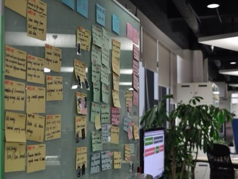

廣東話有一句諺語：「嘢，係做唔完嘅」
其實，即是工作是永遠做不完的意思，我覺得，這句正是最能體現當今所謂互聯網思維的核心理念。
為什麼這樣說?
因為，現在的處境因為獲取知識相對成本比以往要低得多，這當然帶來了機遇，但同時，也令企業和個人帶來各種前所未有的困難和挑戰，包括：
- 看到希望做的方向和事情特別多
- 想要消化的信息量根本沒時間處理
- 計劃往往來不及轉變，要麼選擇一成不變；要麼朝令夕改，累得要死；要麼無從入手，不知怎樣改變
以往的執行方法和心態，我比較喜歡用manage這個字眼來說。通常希望先把scope或各種客觀條件和情況定義好並相對不變，再跟據這大前提下作出各種精細分配，定制計劃進度並有效運用所得資源。
這都建基於對外在環境和未來的有效預測和掌控。但，可惜的是，這個世界變了。
當您有天發現，原來有些公司，已經改變商業運作的玩法，能遠比您更靈活和迅速的迎合市場改變，甚至創造機遇，您的競爭優勢又會在那？ (可參考我之前的一篇文章《互聯網新世界＝思維革命》)
要是說，客觀的市場競爭和情況已不太可控和預測的情況下，那我們該怎麼面對？
再進一步想想，要是接受了客觀的環境和情況是不可控的這個現實，那何不，試試擁抱接受這個無可抗的現實，再想想怎樣最好的對應這個情況？
也因此，近年在各領域興起了不少的新理念和新方法，要細心留意的話，您會發現，這些理念其實都多少跟據上面的觀點引伸出來，以擁抱改變為大原則而製訂出的一套工作模式或方法。
擁抱改變的三大背後原則
新思維的演進，其實也跟互聯網的發展一樣，要用「快」這個字，倒不如說是洪流也不為過，更為貼切。
這些年由於工作關係，有幸更容易接觸到形形式式各種的嶄新思維。 可能我是一個不願意隨波逐流，人說什麼我就會全單接收和認同的那類人。 我更多的會嘗試思考理解背後的原因，嘗試學會融匯貫通，並吸收以豐富一直以來適合自己的一套想法和風格。
那對我來說，這形形式式的理論背後都有著什麼共同的法則？ 或許分享一下當中我的粗淺想法和領悟吧：
1. 可視化 Visualize
或許大家都會多多少少面對過以下情景：
- 部門或專業領域之間，根本沒法好好溝通
- 你說你的，我說我的，其實雙方一點也聽不進去，彼此很難明白對方
- 管理者控制不了進度，不理解進展，對他們而言就是黑箱作業
- 執行部門往往又覺得管理部門完全不理解相關專業，沒法體恤當中困難，甚至因為各瑣事阻礙預定的進度，討厭得很
- 最終結果，永遠跟當初想法完全兩回事
- 各自其實對事情都有自己一套的想法
試想下，當大家連說話都沒法相互理解，又怎樣可有效溝通，更枉論談得上可有效協作了，right?
【有什麼辦法？】
共創一套簡單易明的語言
想深一層，與其你說你的，我說我的，何不重新共同定義創建一套簡單的，大家都容易明白理解的語言，大家都能明相對一致的理解，把各自專業的城牆拆除，讓大家能好好溝通? 
【做法】
- 盡量不用任何文檔，一來準備花時間，很多人其實也懶得看，要看也得花團隊每個人不少時間，看了其實理解可能也差異不少
- 用圖像說話
- 化繁為簡，不着重形式，嘗試思考用最簡單直觀的方式來表逹各種複雜的事情
- 將事件盡量舖開，一目了然
【一些例子】
 好像管理時，會把每個需求重新定義，以故事咭形式形容每個需求，合組起來形式故事牆，什麼人在做，進展到什麼階段，全體每個人都一目了然。
好像管理時，會把每個需求重新定義，以故事咭形式形容每個需求，合組起來形式故事牆，什麼人在做，進展到什麼階段，全體每個人都一目了然。
 把客戶群重新定義，與其一堆marketing的文檔，不如創建一個個有血有肉的角色（我們叫personas)，以圖像形式讓團隊對所針對的客戶形成一個具體的印象，避免團隊對客戶的認識過份含糊籠統，或各自各有不一樣的理解，沒有達成一致。
把客戶群重新定義，與其一堆marketing的文檔，不如創建一個個有血有肉的角色（我們叫personas)，以圖像形式讓團隊對所針對的客戶形成一個具體的印象，避免團隊對客戶的認識過份含糊籠統，或各自各有不一樣的理解，沒有達成一致。
 網頁或產品怎麼樣，何不先用一些簡單直觀的方法讓雙方取得共識?
網頁或產品怎麼樣，何不先用一些簡單直觀的方法讓雙方取得共識?
 一個故事牆，遠比你在電腦上的任何系統來得清楚、直接，計劃進展一覽無遺
{kind=link}
就算演講滙報，可以不再是沉悶的point form和圖表的顯示形式，透過圖像，或以情景故事形式，在受眾群腦內先建構一個具體的易明的映像/場景，增加說服力，這也是visualize的其中一種體現。
{kind=link}
| ＜上一篇 | 繼續觀看第二部份＞ |